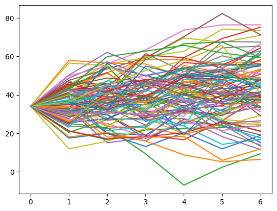
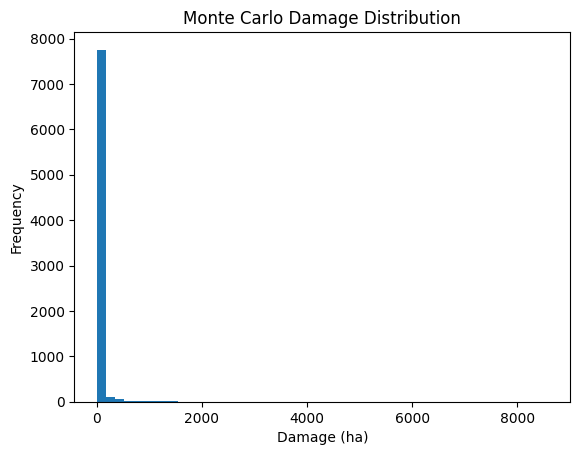

Meeting the brief
Basic requirements
Basic requirement 1
Inputs:
Analog inputs:

- Cup anaometer - Windspeed
- Thermometer - Temperature
Digital inputs:

- Button A - Start system
- Button B - Connect to WiFi + ThingSpeak
Primary outputs:


- LED screen
- OLED screen
System start:
- System starts by automatically initialising variables and creating empty list (used to compute max gust) while displaying a loading bar.System then promptes user to press B to start WiFi connection process
- WiFi connection process begins when user presses BSystem attempts to connect to WiFi, If successful then attempts to connect to thinkspeak (API + software used for data logging)
- If all succesful, User presses A to start data logging process
- The system runs automatically once started by the user.
Basic requirement 2
Collecting Enviromental data:

- Windspeed is collected by Cup anemometer
Collected in meters per second but computed to knots by system (1 m/s = 1.94384 kt) - Temperature is collected by thermometer
- Readings flow into the mircobit in an anaolog fashion
- Extra readings are then computed derived from these readings including:
- Max/Min temperature
- Max 10 minute (any time peroid can be choosen) Gust
- Mean wind
Logging Enviromental data:

- Every time a set interval elapses, Computed data is sent to ThingSpeak
- This is done via WiFi and connecting to the ThingSpeak API using an API key
- I found ThingSpeak the most accurate method of data logging, I found serial to be inconsistant and the inbuilt data logger had space limitations
- ThinkSpeak allowed for secure and accessible data storeage
Basic requirement 3
Simulation of real world process:
- Every time a set interval elapses, Computed data is sent to ThingSpeak
- This is done via WiFi and connecting to the ThingSpeak API using an API key
- I found ThingSpeak the most accurate method of data logging, I found serial to be inconsistant and the inbuilt data logger had space limitations
- ThinkSpeak allowed for secure and accessible data storeage
Tests to see how the system responds:
Advanced requirement 1
Computer model:
- My computer model takes in multiple weather variables
- My model then generates many possible simulations (worlds)
- In each simulation a 7-day future path for each variable is generated
- Using an Autoregressive model with injected noise and randomness, Ideal for modeling short-term correlations in time-series data, where the influence of past observations diminishes over time. Which suits weather perfectly
- The system then takes the weather readings from each simulation and computes a Damage index score (DSI)
- It does this by taking a varity of weather statistics from the simulation including rolling averages
- And weights and thresholds that are based on historical data and backpropogation
- The probability of a damaging event is calculated as the fraction of simulated scenarios where the maximum DSI exceeds the defined threshold, providing an estimate of P(DSI ≥ Threshold)
- Threshold is set to 0.35 as this was the DSI that damaging storms like Storm Éowyn exceeded Example DSI distribution of calm weather conditions
- The Monte Carlo DSI distribution is positively skewed, with most simulated outcomes producing moderate stress levels and a smaller right-hand tail representing rare but severe conditions. The threshold lies within this upper tail, indicating that high-risk weather scenarios occur infrequently under baseline conditions but are statistically possible
- Forestry damage is then estimated from DSI scores
- Each DSI is converted into a Estimated foresty damage
- If the DSI doesnt reach a certain threshold damage for that simulation is considered to be 0 (trees have a tipping point) The threshold was generated on historical damage also
- Damage is modeled exponentially. After surpassing the threshold, marginal increases in DSI lead to rapidly accelerating increases in forestry damage, because once environmental stress exceeds a critical tipping point, forest systems lose resilience and become increasingly vulnerable to compounding damage.
- Expected damage (ha) is then given as the mean of the calculated damage
- Expected damage (ha): 24, In only extreme statistical cases the damage is not 0 due to the calm past conditions of this simulation
N = 8000 # Number of simulations
H = 7 # Number of days into future


P(DSI ≥ 0.35) = 0.0424 | Percent: 4.24%

Combining data with my embedded system:
- My embedded system gathered only 1 hour worth of data
- But my model uses daily readings
- So the challenge is: how can I use my embedded systme data and combine it with my model?
- My solution: I used the embedded data to estimate something it is good at measuring: 👉 Short-term extremes and volatility ( liability to change )
- Not by replacing historical data, Instead: When Monte Carlo simulates wind or temperature multiply by the embedded amplification factor.
- It is a meaningful measure of how much stronger the variable was compared to typical conditions
- For my embedded system I simulated extreme temperature and low winds which are evident from the amplication factors
Gust amplification resolved as: 1.0637662135132027
Temperature amplification factor resolved as: 2.1316459228665514
Advanced requirement 2
What-if simulation:
- The model allows the user to modify the historical data
- Example: What if Max Gust (kt) increased by 40%
- The system allows to edit:s
- Percentage % increase ↑
- Percentage % decrease ↓
- Multiple variables can be edited
- Number of days into the future
- Number of simulation worlds
- Allowing to see how risk changes when different variables are changed
Advanced requirement 3
Adaptive Feedback mechanism:

- My model classifies risk into multiple levels
- A notifcation is sent to the device
- The text and sound adapts based on the level